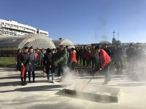
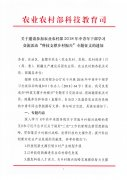
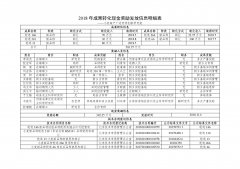
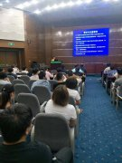
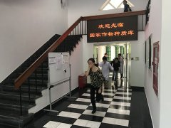
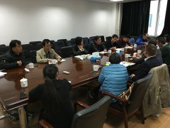
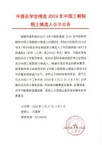
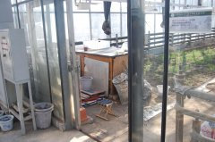
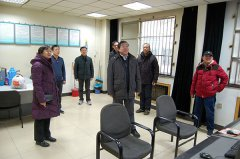
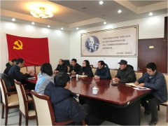

[
后台
][
设为首页
] [
加入收藏
]
中国农业科学院作物科学研究所内网
主页
通知公告
科研信息
规章制度
材料下载
资产清查
条保动态
人事人才
党政工作
信息公开
搜索
检索标题
智能模糊
搜索
热门标签:
通知
兼职
统一采购
成果转化
分配
持股
春节
放假
成果
收益
作物科学研究所大型科研仪器设备共享服务收费标准...
...
[查看全文]
04-10
一周工作安排（4.8—4.12）
04-01
一周工作安排（4.1-4.4）
03-29
关于近期工资调整的通知
03-27
一周工作安排（3.25—3.29）
通知公告
更多...
04-10
一周工作安排（4.8—4.12）
04-01
一周工作安排（4.1-4.4）
03-27
一周工作安排（3.25—3.29）
科研信息
更多...
04-12
作物科学研究所大型科研仪器设备共享服务收费...
08-16
2018年作科所国家自然科学基金资助项目清单
06-28
关于印发《中国农业科学院作物科学研究所 技术...
规章制度
更多...
02-18
中国农业科学院作物科学研究所大型科研仪器设...
11-14
《作科所科研诚信与信用管理暂行办法(试行)》和...
11-06
作科所经济合同管理办法（试行）
材料下载
更多...
03-12
作科所常用人员联系表
02-26
作科所参保人员领取待遇申请表及职工离所离岗...
02-26
作科所入住科研辅助楼人员申请表
资产清查
更多...
05-26
资产盘亏说明格式
03-21
行政事业单位资产清查核实管理办法
03-21
作科所资产清查工作方案
条保动态
更多...
03-14
温特斯泰格厂商回访作科所座谈会
03-07
拟出租房屋情况公示
03-06
关于进一步规范实验室危险废物处置的通知
人事人才
更多...
03-29
关于近期工资调整的通知
11-23
中国农业科学院高层次人才柔性引进管理暂行办...
11-16
作物科学研究所关于开展第一批所级青年后备人...
党政工作
更多...
04-02
2018年度作物科学研究所培训班计划执行情况
03-22
第33次所常务会关于同意确定国家种质库建设施工...
02-28
第29次所常务会关于所领导班子分工安排的决定...
信息公开
更多...
04-11
作科所2019年度创新工程第一批经费分配
03-26
2018年度房屋出租情况公示
02-18
“小麦新品种中麦36品种经营权转让”科技成果转...
图文资讯

我所举办“119”消防安全宣传日活动

关于农业农村部“科技支撑乡村振兴”专题征文...

小麦高产广适育种成果转化现金奖励发放信息公...

我所举办实验室危险废物管理员专题培训

国家种质库举行消防安全系列活动

温特斯泰格厂商回访作科所座谈会

中国农学会推选2019年中国工程院院士候选人公...

关于温室使用问题的通报

所领导慰问春节期间安全值班人员

安全无小事，防患于未然
我所举办“119”消防安全宣传日活动
关于农业农村部“科技支撑乡村振兴”专题征文...
小麦高产广适育种成果转化现金奖励发放信息公...
我所举办实验室危险废物管理员专题培训
国家种质库举行消防安全系列活动
温特斯泰格厂商回访作科所座谈会
中国农学会推选2019年中国工程院院士候选人公...
关于温室使用问题的通报
所领导慰问春节期间安全值班人员
安全无小事，防患于未然
<
>
重点关注
作科所常用人员联系表
网络故障报修联系方式
作科所电子影像平台启用并征集内...
关于作物科学研究所预约系统上线...
作物科学研究所创新研究组组长遴...
关于栽培育种楼会议室实行网上预...
关于重大工程楼会议室实行网上预...
作科所开展“向实行计划生育的贫...
最近更新
作科所2019年度创新工程第一批经费...
2018年度作物科学研究所培训班计划...
2018年度房屋出租情况公示
第33次所常务会关于同意确定国家种...
作科所常用人员联系表
拟出租房屋情况公示
第29次所常务会关于所领导班子分工...
中国农学会推选2019年中国工程院院...
推荐内容
作科所常用人员联系表
作科所经济合同管理办法（试行）...
关于邀请所领导出席重要活动会议...
关于进一步规范作科所议事会议流...
中国农业科学院作物科学研究所展...
作科所电子影像平台启用并征集内...
条件保障处工作人员信息
关于学院南路80号院科研辅助楼床位...